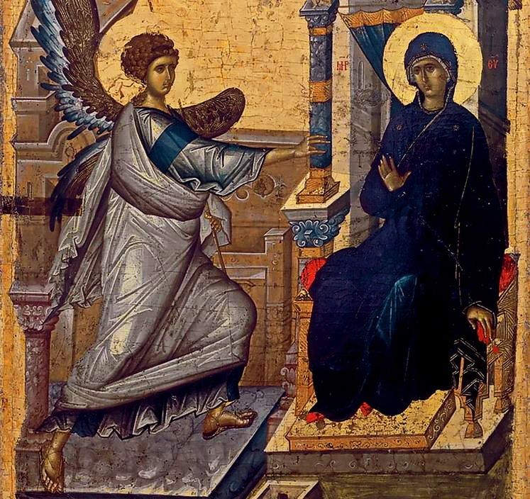

7 04 2014 (1132 дня 7 часов назад)
C Праздником Благовещение!

С Благовещением вас!
С праздником великим православным!
Пусть в этот день коснется вас Господня благодать,
Пусть день этот будет радостным, славным,
Здоровья и милости Божьей хочу вам пожелать.
Пусть сбываются мечты заветные,
Пусть крепка, дружна будет семья,
Чтоб помыслы, поступки были только светлыми,
Чтобы совесть ваша всегда была чиста.
С праздником великим православным!
Пусть в этот день коснется вас Господня благодать,
Пусть день этот будет радостным, славным,
Здоровья и милости Божьей хочу вам пожелать.
Пусть сбываются мечты заветные,
Пусть крепка, дружна будет семья,
Чтоб помыслы, поступки были только светлыми,
Чтобы совесть ваша всегда была чиста.
Сегодня,накануне великого двунадесятого праздника Благовещения Пресвятой Богородицы в Благовещенском кафедральном соборе г. Сухум было совершено всенощное бдение, которое возглавил и.о. управляющего Абхазской Православной Церкви иерей Виссарион Аплиаа, ему сослужил настоятель храма Казанской иконы Божией Матери и Николая Чудотворца с. Кутол иеромонах Давид (Гвазава). Благовещение Пресвятой Богородицы великий двунадесятый праздник и престольный праздник главного собора г. Сухум. У ранних христиан этот праздник носил различное имя: Зачатие Христа, Благовещение о Христе, Начало искупления, Благовещение Ангела Марии и только в VII веке ему на Востоке и Западе было присвоено название Благовещение Пресвятой Богородицы.
Установленный еще в древние времена праздник Благовещения, до сих пор знаменует собой начало спасения и первый шаг в искуплении человеческих грехов Драгоценной Кровью Спасителя. О праздновании его известно уже в III веке. В своих беседах святой Иоанн Златоуст и блаженный Августин упоминают об этом празднике как древнем и обычном церковном торжестве. В течение V-VIII в., вследствие ересей, унижавших Лицо Богоматери, праздник был особенно возвеличен в Церкви. В VIII веке св. Иоанн Дамаскин и Феофан, митрополит Никейский, составили праздничные каноны, которые и теперь поются Церковью.
Согласно народной мудрости в этот день «девица косу не плетет, птица гнезда не вьет». Для православных это не значит, что в этот день можно просто ничего не делать. В этот день христиане обязательно посещают храмы прославляя Пречистую Деву и Господа.
Тропарь Благовещения
глас 4
Днесь спасения нашего главизна и еже от века таинства явление: Сын Божий Сын Девы бывает, и Гавриил благодать благовествует. Темже и мы с ним Богородице возопиим: радуйся, Благодатная, Господь с Тобою.
Кондак Благовещения
глас 8
Взбранной Воеводе победительная, яко избавльшеся от злых, благодарственная восписуем Ти, раби Твои, Богородице, но, яко имущая державу непобедимую, от всяких нас бед свободи, да зовем Ти: радуйся, Невесто Неневестная.
Величание праздника Благовещения
Архангельский глас/ вопием Ти, Чистая:/ радуйся,/ Благодатная,// Господь с Тобою.